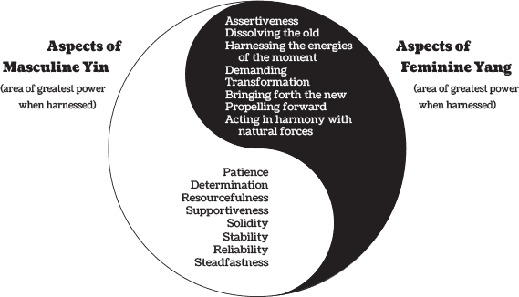

< < < Back
5 Powerful Masculine Quotes By David Deida – Return Of Kings
I’ve recently been re-reading Way Of The Superior Man for the 4th time (yes it’s that good, I highly recommend it) and it never ceases to amaze me at how much wisdom is packed into this little book. Published in 2004, it’s gone on to change the lives of hundreds of thousands of men all across the world—and for good reason. The novel struggles with the concept of masculinity, and how it applies to work, love, mindset, and most importantly, purpose.
The novel, despite being filled with countless gems of neomasculine wisdom, is so beautifully written that even women can appreciate it. It doesn’t have the usual “I’m angry at the world” undertone that a lot of red-pilled material does (not that the anger would be unjustified). Thus, I’ve decided to share 5 of my favorite quotes from this epic piece of literature, so that we may all learn from it, and hopefully live a better life.
1. On Women Giving You Shit Tests
Your woman knows your weaknesses better than anybody. She knows where you will falter and give up. She knows the degree of mediocrity you will settle for. And, she knows your true capacity as a full man, a man of free consciousness and love. Her gift, if she is a good woman, is to test you with her darkest moods, over and over and over, until your consciousness is unperturbed by feminine challenge, and you are able to pervade her with your love, just as you are here to pervade the world. In response to your fearless consciousness, she will drench your world in love and light.
It is no secret that women will constantly test you as a man to see what you’re worth. It’s also no secret that learning to effectively pass a woman’s shit tests is one of the best ways to make her desperately want you. Yet despite this common knowledge within the manosphere, many men are still very uncertain as to why women test them.
Plenty of men get angry at the games that women play, the snarky little comments they make to try to undermine your confidence, and the sneaky tests that they throw at you to see what you’re made of. But, as David Deida points out, a woman’s shit tests are actually one of her greatest gifts to you, as a man.
Women don’t reward weakness. They do not reward a man who is spineless, who lacks firm boundaries, or who refuses to stand up for himself. They do, however, reward strength. They reward a man when he is completely and utterly grounded. They reward a man when he is a megalith of confidence, completely unmoved by her tests. This is, in fact, the greatest secret of all.
She WANTS you to be a strong man. Secretly, she’s hoping that you’ll be the amazing man who she wants to sweep her off her feet. As David Deida says, any woman you grow close to is very aware of what you will settle for. You can bet that she’s aware of where your weaknesses are, and unless you work on them, she will pound on them over and over again.
This is a woman’s greatest gift to you, ironically enough: to harden you through testing you.
2. On Masculine Spirituality

The way a man penetrates the world should be the same way he penetrates his woman: not merely for personal gain or pleasure, but to magnify love, openness, and depth.
As I’ve been saying for quite some time now, masculinity gets a bad reputation for being some sort of primal, ape-like essence. Yes, as others such as Jack Donovan have pointed out, masculinity is very much physical. However it doesn’t stop there.
True masculinity is embodied in all “core four” areas of your life, as I have coined them: your body, your mind, your heart, and your spirit.
A man’s body must be physically strong and his mind must be sharp. Everyone knows these things, however what most men are not aware of, is that masculinity is also part emotional and part spiritual. A whole novel could be written on the nuances of emotional masculinity, but essentially what it comes down to is this: men draw state from within, and women draw state from without.
In other words, a man’s emotions influence his environment, whereas a woman’s emotions are influenced by her environment. Yes, obviously this is a gross oversimplification, but in general it’s true. This is why women love to talk; vibing with their girlfriends puts them both in a good mood. It’s why they love to dance; they draw good emotions from the music and their environment, much more so than men.
It’s why men are the creators, the movers, and the producers of the world; their internal ambition acts on their external world. They have an emotion, and they make it reality.
This is precisely what David Deida is saying. As a man, it is your duty to penetrate the world with your love, and with your vision. Do not waste time over pettiness or frivolities. Seek to leave your mark on the world…”not merely for personal gain or pleasure, but to magnify love, openness, and depth.”
3. On Fear
![To-understand-your-fear[1]](wp-content/uploads/2016/09/To-understand-your-fear1.jpg)
Your fear is the sharpest definition of your self. You should know it. You should feel it virtually constantly. Fear needs to become your friend, so that you are no longer uncomfortable with it.
It is a common misbelief that fear is a bad thing. Fear, in excess, or should I say without courage, is definitely a bad thing. Even then, however, it points you to exactly what you need to do.
Many a poet, author, and motivational speaker, have lauded fear for its ability to show you the way. Fear is like a guidepost: it shows you what you must do if you wish to fulfill your destiny. Fear is that nagging little bitch in the back of your mind that’s telling you to “wait another day,” before you start that business.
It’s that voice telling you to give up and just get a stable job, because you’ll never be able to achieve your dreams. It’s that voice telling you to give up on your purpose as a man. Ironically enough, however, you must do exactly what it is that you’re afraid of.
I believe it was Stephen Pressfield who said that the more inner resistance we face towards doing something, the more vital it is for our personal growth…and this is so, entirely true. When you’re afraid to do something, you’re on the verge of a massive breakthrough in your personal evolution. When you confront your fear, and tell that bastard “fuck you,” as you fly in its face and do what it is that you want to do, you take another step towards becoming the ideal version of yourself.
Whether it’s learning game as a newbie, making an irrevocable commitment to yourself, or deciding to leave behind your material life to pursue a passion, if you’re afraid of it, you can bet your ass that you need to do it. As David Deida says, “Fear needs to become your friend, so that you are no longer uncomfortable with it.”
4. On Living Life

If you are waiting for anything in order to live and love without holding back, then you suffer. Every moment is the most important moment of your life. No future time is better than now to let down your guard and love.
This quote speaks to me on a very deep and personal level. For most of my life, I was afraid to just be myself. Years of dysfunctional relationships and abuse had left me a completely broken shell of a man, too afraid to live life on his own terms.
But something told me that this would not do. In the words of C.S. Lewis:
To love at all is to be vulnerable. Love anything and your heart will be wrung and possibly broken. If you want to make sure of keeping it intact you must give it to no one, not even an animal. Wrap it carefully round with hobbies and little luxuries; avoid all entanglements. Lock it up safe in the casket or coffin of your selfishness. But in that casket, safe, dark, motionless, airless, it will change. It will not be broken; it will become unbreakable, impenetrable, irredeemable. To love is to be vulnerable.
The man who waits for something, as David Deida says, in order to live and love without holding back, will ultimately only suffer. I’m struggling to find words that can express my thoughts without having to resort to cliches…and I can’t do it.
I can’t do it, because everything that needs to be said has already been said a million times before. It’s all a cliche, but that’s the point…a cliche is something that everyone recognizes to be true, but that nobody really lives by. Everyone, on some level, knows that we only have one life. Everyone knows that they’re going to die some day, and that they would be happier doing something else.
But nobody fucking does that something else. They just take the path of least resistance and end up dying a miserable, meaningless life, without having left anything behind. I implore you not to be like them; do not leave anything behind. To quote another oft quoted cliche: “Dream as if you’ll live forever. Live as if you’ll die today.”
5. On Masculine Purpose
![new-poster-out-ranveer-singh-as-the-fierce-warrior-in-bajirao-mastani-0001[1]](wp-content/uploads/2016/09/new-poster-out-ranveer-singh-as-the-fierce-warrior-in-bajirao-mastani-00011.jpg)
Every man knows that his highest purpose in life cannot be reduced to any particular relationship. If a man prioritizes his relationship over his highest purpose, he weakens himself, disserves the universe, and cheats his woman of an authentic man who can offer his full, undivided presence.
I thought a lot about which quote to include as my final piece of advice. There’s a plethora of incredible quotes on having a purpose from this book, but I thought that this one was the most poignant, because I believe it’s a lesson that many men have yet to learn, and what’s more, I believe that many of us have had to re-learn this lesson a number of times before finally accepting it.
You. Must. Not. Make. A. Woman. Your. Purpose.
When you make a woman your purpose, you deny the universe the greatest gift that you can give it. As a man, being on your purpose is not only your obligation, but it is the only way that you will be happy. Why do you think that depression is such a widespread disease among so many modern men? It’s because they lack a strong sense of purpose.
For millenia, our purpose was given to us; we had not a choice. Our purpose was to defend the tribe from invaders, and to protect our women and children, as well as our brothers in arms. But now? We have no purpose. We have no great war, no impending doom…just a miserable existence in a world devoid of purpose. This is our gift.
“How can this be our gift, Jon? We have no purpose!” I can hear someone ask. Yes, you’re right. We do, in fact, have no purpose.
Now, it’s our turn to create one.
It’s our time to forge our own destinies, and charge down our own paths, carving out our places in the world, creating a ripple of positivity that will last for eons. It’s our time to delve deep into our own souls, and discover our life’s meaning. It’s time to take responsibility for our own destinies…and I hope that you’re all up to the task, because we’ve got one hell of a road ahead of us.
Summary
If these five quotes have been meaningful to you, then you need to read this book. I cannot stress how life-changing it was for me, and I’m thankful that I read it during a time when I was having a personal crisis. I would likely not be the same man that I am today without his guidance.
David Deida is one of my favorite authors on masculine spirituality; as I said before, he forcefully exposes red pill truths, yet he writes them so eloquently and beautifully, that even the most hardened feminist could appreciate them. If you are wise, you will get yourself a copy, highlight it, dog-ear it, and re-read it for years to come. That’s what I’ve done, and it’s served me well.
Read More: 21 Quotes Of The Vikings’ Havamal To Guide A Masculine Lifestyle